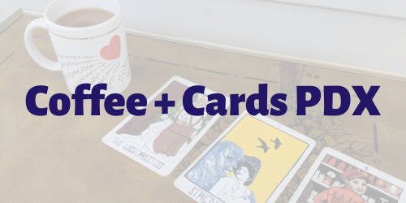
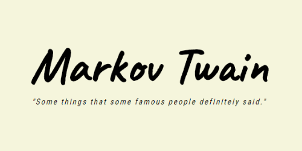
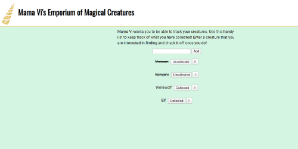
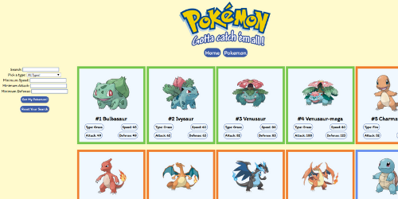
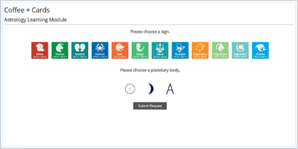

I am a full-stack software developer in Portland, OR. My diverse background working with large data-sets, creative problem solving, and managing diverse communities has given me the skills to adapt to any environment. Learning to play roller derby as an adult has taught me that I can learn anything that I put my mind to.
Experience
Technology
- JavaScript
- HTML
- CSS
- Node.js
- Express
- Jest
- SQL
- PostgreSQL
- MongoDb
- Mongoose
- Travis
Tools
- Heroku
- GitHub
- Adobe CS
- Adobe xD
- TDD
- Compass
- Postman
Other Tools
- WordPress
- ArcGIS
- TDD
Select Projects
-

Daily tarot card tracker that allows the user to track trends in their card readings and store information for each card pulled.
Tech: Node, Express, MongoDB, Mongoose, Vanilla JS, HTML, CSS
site // github -

Node based back end Twitter bot using Markov Chain technology to create predictive text sentences.
Tech: Node, Express, MongoDB, Mongoose, HTML, CSS, Vanilla JS, multiple npm packages
site // github -
Combined information from 5 different 3rd party APIs to create informative front end hike and camping search site.
Tech: Vanilla JS, HTML, CSS, SQL, Postgres, Node, Express
site // github
-

My spin on a typical to-do app. Create a list of magical creatures you want to collect and check them off once collected!
Tech: Node, Express, Vanilla JS, HTML, CSS, SQP, Postgres
site // github -

Curious about Pokemon? Learn more about them with this Pokedex! Utilized pokemon 3rd party api.
Tech: HTML, CSS, Vanilla JS, superagent/API calls
site // github -

A simple astrology learning module. Choose a sign and an astrological body and learn more about that aspect. Continuing to add data to the project.
Tech: Vanilla JS, HTML, CSS
site // github